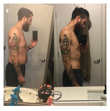
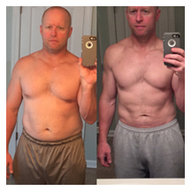
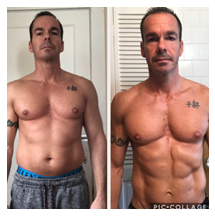

What If I Told You…
...feeling saggy, soft, and self-conscious was not a life sentence?
...you didn’t have to feel terrified of taking your shirt off in public?
...the lean, sexy, chiseled physique you dream about IS a reality?
How do I know? Because I’ve done it…
Hi, I’m Jorden Pagel. For years I struggled to lose fat, get jacked, and build the body I wanted, without being miserable in the process.
For years I looked like this:

At my worst, I topped the scale a stone’s throw away from 300 pounds. I pretended to be happy but secretly I hated my life.
I felt ashamed to take my shirt off in public.
I was mostly ignored by women...always the “friend”.
While my friends were off scoring numbers, I was left in the corner by myself, holding my drink.
I wanted to shop for clothes and not find myself on the verge of tears because what I wanted didn’t come in sizes big enough for me.
I didn’t want to be the fat kid growing up. But I was. Because I didn’t know what to do about it.
Every attempt at losing fat was met with failure, frustration, and misery.
Every diet I went on had me feeling so deprived that I would ultimately end up cheating on my diet with wings and pizza and double Jack and Cokes, undoing all my progress.
Every exercise program I did left me so sore and miserable that I felt like I’d gotten a trampled by a herd of trundling rhinos; only making it through two or three workouts before I ultimately gave up.
I started to feel like I was one of those people who “just couldn’t lose weight.” I felt like I was living inside a nightmare that was never going to end.
Welcome To My Chubby, Blubbery Nightmare
You’ve probably felt like that too. Like you couldn’t lose weight. Like you were living inside a nightmare that wouldn’t end.
Well, guess what...we were both wrong. With the right formula, in the course of a few years, I was able to:


Look, I’ll be honest: The road from chubby to chiseled is not an easy one. Not for people like us, anyway.
We’re not part of the genetically gifted.
We don’t have willpower stronger than steel.
We have lives. We’d rather spend Friday nights with our friends, than at the gym.
We want to be able to take our shirt off in public, and not be embarrassed, or feel like people are staring at our fat rolls.
We want to grab a donut or ice cream or pizza without feeling like we’re wrecking all our progress.
But it can be done.

The Chubby-to-Chiseled solution for living a life with less fat, more more muscle, and screaming confidence.
Problem #1 - Complicated & Confusing Diets
How many times have you been so frustrated by diet rules and restrictions that you caught a case of the “Fuck its” and found yourself wrist deep in a pint of Trader Joe’s Cookie Butter ice cream, and bowl of chocolate peanut butter cheerios?
Here’s the truth: Those fancy fads are keeping you fat, soft, and squishy.
Most programs don’t just make you bite off more than you can chew, they try to shove the whole meal in your mouth, and tell you to swallow.
The reason you’re not getting results is because you’re choking on complexity.
The reason your gut is still hanging over your belt is because you’re being suffocated by confusion.
You don’t need a diet with more rules than a game of Monopoly.
You need a plan of attack that you can take one bite at a time.
Solution - A Simple, Strategic, Straightforward Approach
With the Chubby-to-Chiseled Blueprint you’ll never get more than you can handle.
Your nutrition will be strategically built around your lifestyle, your preferences, and your goals, so you’re not only eating in a way that’s going to melt fat and build muscle, but doesn’t have you confined by ridiculous rules or rigid restrictions.
All that is topped off with a straightforward plan of attack each week, with the specific marching orders you need, so you know exactly what you should focus on to build a body you love seeing in the mirror every morning.
Problem #2 - You’re stuck in an endless, program-hopping, diet-jumping cycle of misery
Overnight promises, quick fixes, gimmicks, the “one weird tricks”...guess what they all have in common.
Not one of them work. You’ve tried them. Over and over; only to end up back in the same same place I did: Overweight and miserable.
How many times have you felt like an exercise program was too hard to stick to? Maybe it had you performing high intensity intervals, six days per week, until you passed out on the floor in a pool of sweat and your own vomit. Or maybe it had you doing something even worse than all that...like cardio.
Solution - Ruthless Consistency of a plan built for you, your lifestyle, and your goals.
Are you ready to learn the Chubby-to-Chiseled secrets for losing belly fat, building lean muscle, and crafting a standout physique that nobody else has ever shared with you?
You don’t have to hate your life in the process.
You don’t have to be miserable.
You don’t have to sell your soul and become a slave to the gym for a set of abs.
Seems like common sense, right? And yet we constantly try to stick with programs that are less enjoyable than being whipped by a rubber hose.
You can’t build ruthless consistency that way. The only way to create that habit, and build your chiseled physique is with a plan built for you; that complements your life without controlling it.
Problem #3 - You’re using cookie-cutter advice from cereal box-certified trainers
Generic plans produce generic results.
You know why websites, magazines, and Instagram accounts put out all those different workouts and meal plans? Because they’re easy to create. They don’t have to take into account the most important aspect of any fitness plan.
You.
That’s why those programs have never produced the results you wanted.
That’s why you’re constantly searching for the next program or diet.
You haven’t found one that works because you haven’t had one created for you.
Solution - A truly custom coaching plan built for YOU and the results YOU want to achieve
If you want generic results, keep cycling through generic programs. If you want to love looking at yourself in the mirror every morning, feel ready to rip your shirt off at the first sign of the sun, or turns heads when you walking into a room, then you need something better.
You need a program built for you, not a drug-infused bodybuilder or someone without the responsibilities of family, work, or the complications of life.
You need a nutrition plan that changes as your life changes, not one that requires you to stay home Friday nights, or never go out to eat with your friends, family, or significant other.
And most importantly you need expertise to implement your plan, day in and day out, so you can finally stop spinning your wheels, feeling miserable when you look in the mirror or step on the scale, and finally start achieving the results you want.
“ Jorden's real world experience in transforming his physique, his endless pursuit of self-improvement, and his client-focused coaching style have rapidly made him one of the top coaches in the fitness industry. His real-world experience in transforming his physique, with hundreds of success stories, and his ability to help his clients rapidly transform their lives without obsessing over fitness and nutrition truly help him stand above the crowd. There are few coaches I'd rather work with, learn from, or recommend than Jorden. He's truly a world class coach--and he's only getting better. ”


“ Writer Derek Sivers famously intoned, “if more information were the answer, we’d all be billionaires with perfect abs.” If elite fitness came down to sets and reps, anyone who’d read a few books would be able to get clients to their highest potential; if getting fit were as simple as just going to the gym and executing, people wouldn’t need coaches at all. But neither of those is true.
In truth, helping people change their bodies is a kind of alchemy: equal parts art and science. Good coaching requires mastery of both, applied by turns, and in equal measure. GREAT coaching is the understanding of how and when to change gears in the application of each.
This is where Jorden Pagel stands above and apart from his contemporaries.
Jorden has been on all sides of the equation: a trainee. A client. A coach. A programmer. A guinea pig. A body transformation case study. A body transformation specialist. A lifelong chubby guy turned into a chiseled coach of the highest order.
Jorden is the very spirit of a before and after picture, made manifest and set in front of you, armed with all of the experience of having lived very different lives in very different bodies. The breadth of that experience grants him a type of wisdom and insight to which most can’t begin to lay claim.
Oft-sought and rarely found, Jorden has deep intuition to go with his technical knowledge, and whether it’s adjusting macros or knowing when to apply tough love vs a gentle touch, he innately knows when he needs to shift gears to give his clients exactly what they need at any point.
If you’re looking to shortchange yourself and go through the motions with “decent” programming and a few weekly check-ins, Jorden‘s probably not the guy for you.
But if you’re committed to changing your body in all the ways you’ve ever dreamed...
AND using that experience to learn about and improve yourself on a deep level...
...while cultivating a relationship with a mentor who cares about your success as much as you do...
Well. You should probably work with Jorden Pagel.
As a coach and alchemist, he gets my highest recommendation.”
Why the Chubby to Chiseled Blueprint is the last transformation program you’ll ever need...
What you get: Never have to diet again
Most body transformation programs put you on a diet in order to get you results.
But you don’t need another diet. Diets create a life of restriction.
What good is having a great body if you can’t show it off at parties, the beach, or out with our friends?
What good is being more attractive if your eating is so restricted that you can never go out for ice cream on the first date?
What good is loving what you see in the mirror, if you hate what you see on your plate?
Diets don’t allow you to do that. And that’s why my clients never diet.
Instead, you need a system. A system that gives you true nutritional freedom; to live your life and shed those extra pounds in the process.
And the Flex-Fast Solution is that system
The Flex-Fast Solution combines two of the greatest nutritional strategies known to man: Flexible Dieting and Intermittent Fasting. It’s the backbone of the Chubby to Chiseled coaching program. It’s the strategy I used to shed over 80 pounds of fat, and transform into a Rhino-Jacked human being.
It’s the strategy I’ve used with hundreds of clients to help them shed thousands of pounds of fat.
And it’s the strategy we’re going to use in your program to help you shed those unwanted pounds forever, uncover your abs, and build a head-turning physique.
Why does the Flex-Fast Solution work so well? Simple. Because it allows us to create a nutritional strategy that not only works, but will work for YOU.
With Flexible Dieting, we can craft a plan that allows you to eat your favorite foods, to go out to dinner with your spouse, or travel on vacation, while still dropping pounds and pounds of fat.
And on its own, Flexible Dieting is a deadly effective strategy. But when you combine that with Intermittent Fasting, you then create fat’s worst nightmare.
Intermittent Fasting is like injecting your nutrition plan with steroids. It will take good results and turn them into great results.
IF puts an end to one of fat loss’ biggest hurdles: Hunger. It allows you to eliminate feeling hungry, while allowing you to eat larger meals, that include more of your favorite foods, more often.
Intermittent Fasting also helps activate key hormones that are going to help you burn fat faster, and build muscle quicker than ever before.
Most importantly though, the Flex-Fast Solution delivers you a plan that complements your lifestyle; not controls it.
True food freedom, crafting a lean, badass physique, and getting in the best shape of your life for the rest of your life requires flexibility; not rigidness.

It requires a plan that you can fit to your schedule.
It requires a plan that allows you to feel satisfied, not deprived.
It requires a plan that shows you how to eat properly to fuel your workouts so you can build bigger arms, or shred the fat covering your abs.
t requires a plan that you can not only implement every day for the rest of your life, but do so without even thinking about it.
And that’s what you’ll get here:
a plan crafted for your life, schedule, and even your vices;
so you never have to diet again.
What you get: The results you’ve been looking for, in less time than you thought possible.
Look, I get it...you’re busy. You don’t have hours to spend in the gym everyday.
Hell, I love going to the gym and I don’t even want to spend hours there.
The good news is, you don’t have to.
How would you like to get better results, while spending less time in the gym, and getting back more hours to spend doing things you love?
Great results don’t come from the amount of time you spend in the gym; they come from what you do while you’re there. That’s why your customized training plan is built to help you train smarter and harder; not longer.
You’ll perform exercises that give you the biggest bang for your buck; leaving you feeling strong and confident, not sore and beat up.
You’ll build more muscle, and shed that fat hanging over your waistline.
You’ll be in and out of the gym in less time than an episode of Game of Thrones.
And most importantly, you’ll know exactly what you need to do each time you go. No more wandering around the gym, aimlessly, trying to decide what exercise to do after bench press on Chest Day. Your custom plan will be in your hand - in your phone, in fact - so every time you hit the gym, you’ll know exactly what you need to do, so you can get in, get the hell out, and get on with your leaner, more muscular life.
What you get: Unlimited support and accountability from someone who’s helped hundreds of clients lose thousands of pounds of fat, without completely overhauling their lives.

"I learned a lot more about nutrition which complimented my training goals. I’ve learned how macro targets can be a healthy and realistic approach, and I never felt like certain foods were completely off limits."
Life is going to happen. There’s no way around it. Work stress...sick kids...or just plain not “feeling it”...all these things can get in the way of your goal of building a chiseled physique. And I’m guessing they already have once or twice.
Even the best training programs and nutrition plans won’t work if you can’t execute them. If you can’t carry out your plan with that ruthless consistency, nothing else matters. And how can you make sure you do that? With the extreme accountability to match.
The accountability you get as part of the Chubby-to-Chiseled program is the difference-maker between the bodybuilding.com programs, or 21-day diets or challenges, and mine.
Travel coming up? You’ll get specific advice and workouts to help you get home unscathed.
Last minute business dinner? We’ll strategize so you can sign on that new client and peel off fat at the same time.
Sick, tired, or just feeling like a leaky bag of runny dog shit? We’ll tap the breaks when we have to, so we can slam on the gas when you’re back on your feet; instead of beating you into the ground even more.
As good ol’ Mikey T once said:
"Everyone’s got a plan until they get punched in the mouth."
And nothing is going to punch harder than life.
Through weekly check-ins, emails, texts, calls, and even carrier pigeon if necessary, you’ll get maximum accountability to ensure you’re taking action every single day towards your goals, and when life starts throwing punches, you can hit right back.
"Down over 25 pounds and 6 inches off my waist...This has been the best money I have ever spent on myself."
nutrition client, Tammy
Now I know what you’re thinking:
“That all sounds really cool, but how do I know if this is something that’s going to work for me?”
I’ll be brutally honest with you, it may not work for you. This may not be the program you’re looking for, because…
You’re going to have to work hard.
You’re going to have to be ready to prioritize your health and fitness.
You’re going to have to say “No” to certain things sometimes.
You’re probably going to have be comfortable with getting uncomfortable.
And if you don’t like sound of any of that, then this is not the program for you.
Because here’s another thing that those generic programs don’t tell you:
Success starts with you. It starts with your effort, your priorities, and your willingness to do things you may have never done before, in order to get results you’ve never gotten.
So if that’s not you, I completely understand. Hell, that wasn’t me for years.
However...if you are one of those people who’s sick of waking up frustrated…
...sick of gaining and losing the same 20 pounds over and over again…
...sick of feeling like you have to give up everything you love to get the body you want…
...disgusted with your lack of results…
...then read the Ten Guidelines of our coaching program, and learn exactly how we’re going to change all that:
 I understand there is a minimum six-month commitment and I can cancel anytime after that.
I understand there is a minimum six-month commitment and I can cancel anytime after that.
 I understand that my training, nutrition, and supplement plan will be specifically tailored to me, my schedule, and to helping me build my dream physique.
I understand that my training, nutrition, and supplement plan will be specifically tailored to me, my schedule, and to helping me build my dream physique.
I understand Coach Jorden will reply to all my emails and texts in a timely manner - 24 hours - but usually much sooner.
I understand if I don’t comply with the program or fail to check-in each week, Coach Jorden has the right to let me go from the program.
I understand I need to be available and commit time to training each week. Coach Jorden will work to tailor my plan to my schedule but I can commit to training, at minimum, three total hours per week.
I understand online coaching is an investment and incredible value for what I get, costs a fraction of what it would cost to work with Jorden in-person, and if I choose to continue past our initial commitment I will be offered a further discount.
I understand it would be ideal to have access to the following equipment:
|
|
|
|
|
|
|
(Please note these are not all necessary. We will customize your workouts to fit the equipment you have whether you’re training out of hotels or your own gym.)
I understand I will be physically and mentally pushed, and some of what I believe about training and nutrition may be challenged. I understand sometimes getting results goes against what society tells me I should be doing, but I also understand Coach Jorden will answer all of my questions, and the reasoning behind the methods.
I understand my coach cannot put more effort into getting me results than I can, and Coach Jorden will do everything possible to help me build the body and life I want; as long I remain driven, dedicated, determined, and put forth the effort that is asked of me.
I understand the Chubby-to-Chiseled Blueprint program is an INVESTMENT in myself that will pay me back for the rest of my life. I know Coach Jorden is here to teach me how to become self-sufficient so that I can continue to have the body and life I want, long after I leave the program.
REAL RESULTS
"Jorden not only helped me get into shape and feel better about my body, but he educated me on the process...His knowledge and understanding of the body and nutrition is outstanding!"
Jorden is a fantastic coach..he made the entire process as painless as one could make it. He had the perfect advice and insights any time I needed it. Whether it was words of wisdom, a virtual pat on the back, or a little bit of tough love and re-direction, he always knew the right thing to say.”
nutrition client, Alex
“Jorden helped customize my plan to get me to where I wanted to look and feel without sacrificing performance in the gym. My strength numbers stayed basically the same despite being in a caloric deficit and my cardio increased significantly. Guess losing 20 pounds helped that too.”
nutrition client, Eric
“Jorden was fantastic at reaching out to me throughout the week, reading my notes and providing positive feedback for the duration of the program, I will definitely work with Jorden in the future..when I determine my next set of goals.”
nutrition client, John
“Becoming a client of Jorden’s, I never felt “alone”. First, we worked on a nutrition plan together and he was there to answer every question I had, and never once did I get the feeling that I was asking a “dumb” question. Then came the workouts and that is when I found muscle groups that I never knew even existed. The workouts were tough, but not impossible and fun to do. Again, he was there any time I had a question about a rep scheme or a technique that I didn’t understand.”
Cindi
"Over the last 12 weeks I've had the pleasure of working with Jorden on my fitness goals. I've always thought of myself in pretty good shape, but never really had the muscle definition I desired....until I met Jorden!”
nutrition client, Chris
What if your diet and your training didn’t have to be a constant source of stress, frustration, and misery?
What if you could build that lean, chiseled, sexy physique you couldn’t wait to show off?
What if you woke up a year from now, in better shape than you’ve ever been in, with the confidence to know you could do anything you wanted to do? To have any kind of life you wanted?
Sounds like a fantasy. But it’s not. It’s reality. I know, because I’ve lived it...I am living it. Fitness is a force multiplier, and if you commit to the process of transforming your body, that will transform every other area of your life, in ways you’ve never imagined.
So, if you’re ready, apply now - for the last transformation program you’ll ever need.